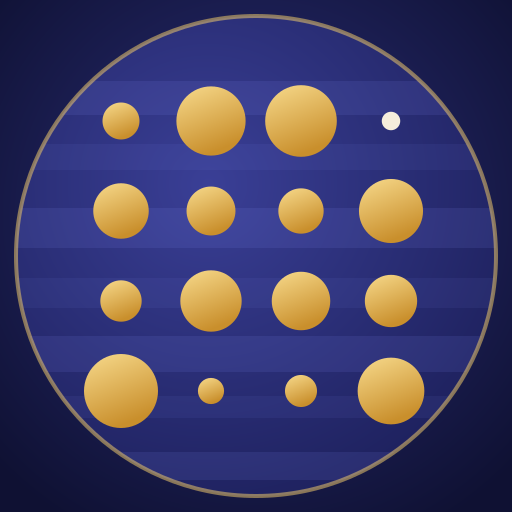
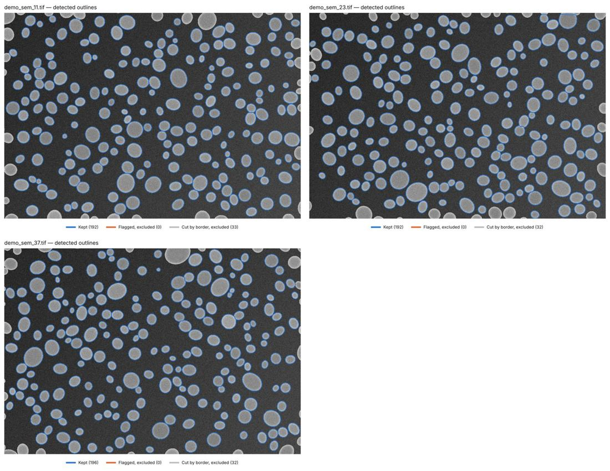
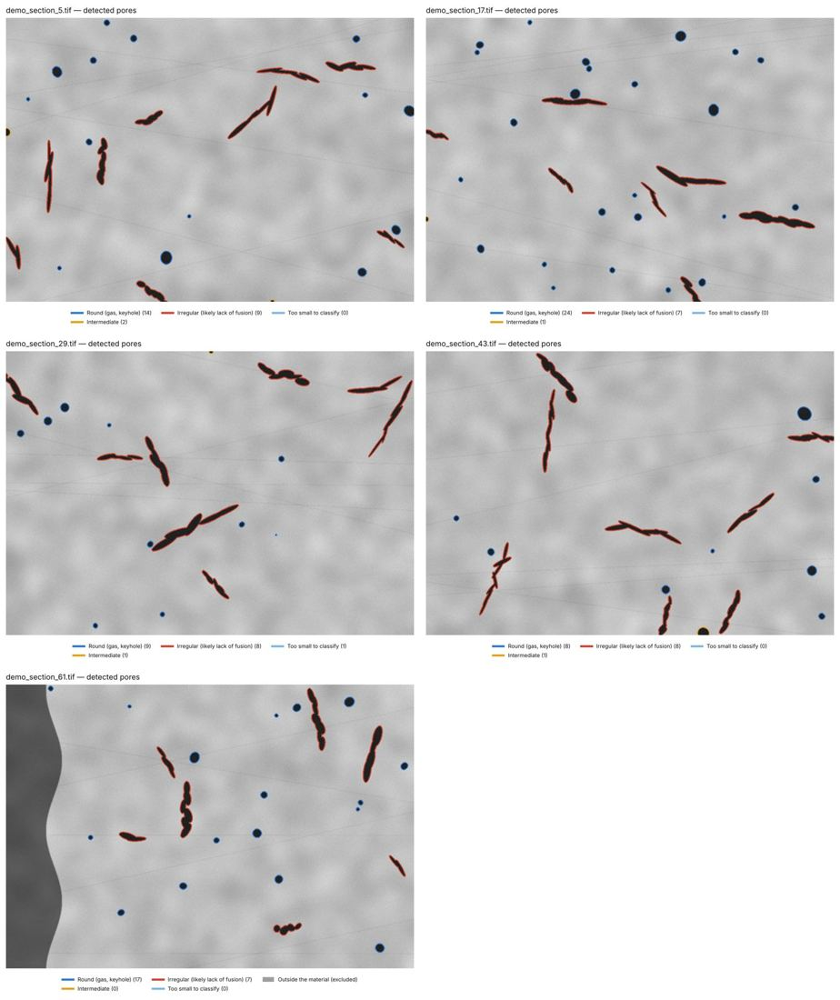
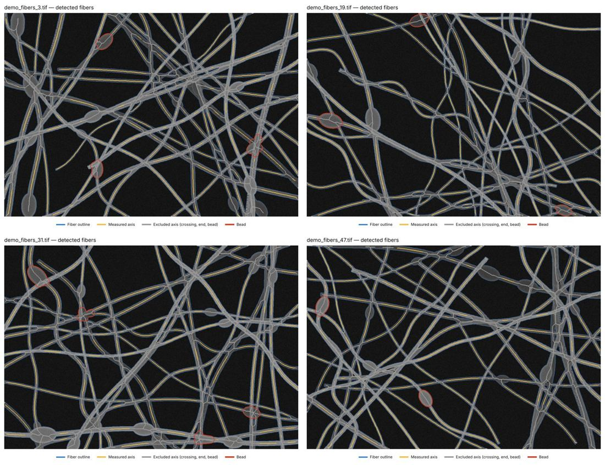

Jovian LabsMicroscopy image analysis, with the uncertainty attached
Send microscope images, get a measurement you can file: statistics with confidence intervals, automatic quality checks rated green, amber or red, a control image showing exactly what was measured, and a PDF report. No installation, no licence: 1 USD per image, and a free demo run on synthetic images whose true values are known.
Particle size & EU nanomaterial screening
- D10, D50, D90 with 95% bootstrap confidence intervals; minimum and maximum Feret diameters
- Share of particles whose smallest dimension is ≤ 100 nm, with its uncertainty, and a meets / not met / borderline verdict for criterion (a) of the EU definition (Recommendation 2022/C 229/01)
- Zeiss and Thermo Fisher TIFF files calibrated from their metadata
- Demo accuracy: 580 particles found for 578 present, D50 within +3.7%

Porosity of polished cross-sections
- Area porosity with 95% confidence interval and relative accuracy (%RA), and how many fields would reach 10%
- Pore sizes, the five largest pores with their position, round (gas, keyhole) vs irregular (lack of fusion) pores
- Uneven illumination corrected, mounting resin excluded, threshold sensitivity reported
- Synthetic sections: 0.59 / 2.17 / 6.16% true → 0.59 / 2.19 / 6.21% measured

Fiber diameter
- Width measured on the grey-level profile across the fiber, at half maximum, like a CD-SEM line width: no threshold to tune
- Length-weighted distribution, 95% confidence interval from a bootstrap over fiber segments, D10/D50/D90
- Beads (lower bound) and fiber alignment index
- Synthetic mats: 295 nm true → 292 nm measured; 305 nm → 302 nm on an aligned mat

Free: check the scale of a whole folder
Before measuring, check the calibration: the SEM scale bar & pixel-size check reads the pixel size from Zeiss and Thermo Fisher TIFF metadata, measures the scale bar, cross-checks them, flags mixed magnifications and exports images with a clean scale bar. It runs in your browser: images never leave your computer.
Run it on your images
- Open a tool on Apify and press Start with an empty image list: the free demo shows the full report on synthetic images.
- Paste direct links to your images (TIFF, PNG or JPG; several fields of view of one sample) and the scale bar length.
- Get the PDF report, the control image, a CSV of every object and a JSON summary. The same tools are callable from Python, from a scheduler and from AI agents through the Apify API and MCP server.
Need a report reviewed and signed by a materials imaging scientist? Write to jovianlabsstudio@gmail.com. Automated image analysis, not an accredited (ISO/IEC 17025) measurement.